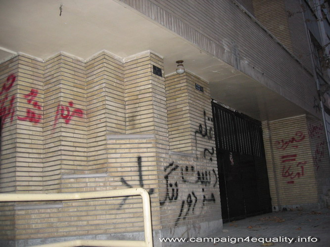
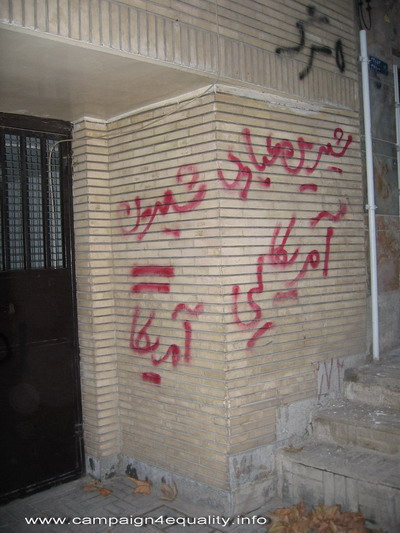
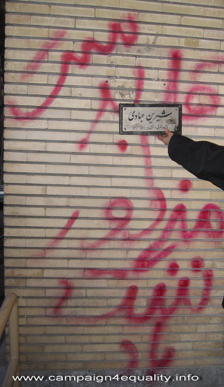

پذيرش > اخبار > سند جرم اقدامات غیر قانونی علیه عبادی/پروین اردلان


 سند جرم اقدامات غیر قانونی علیه عبادی/پروین اردلان سند جرم اقدامات غیر قانونی علیه عبادی/پروین اردلان
13 دی 1387 - - نسخه قابل چاپ

تغییر برای برابری- پروین اردلان:
نمای بیرونی خانه و دفتر وکالت شیرین عبادی را باید به عنوان آثار جرم مخالفان قانون وحرکت های مدنی ثبت وحفظ کرد. تابلوی وکالت شیرین عبادی را از دیوار کنده و لگد کوب کرده اند، بر دیوارهای آجری ساختمان مسکونی و دفتر کار عبادی با اسپری های رنگی شعارهایی در ضدیت با برنده نوبل صلح ودر واقع مدافع شجاع حقوق بشر نوشته اند: "قلم به دست مزدور، ننگت باد"، "شیرین = امریکا"، "مرگ بر امریکا عجوزه امریکایی"... همه اینها جمعیتی از زنان و مردان مهاجم را شکل دادند که شعارگویان تا انتهای کوچه آمده بودند تا زنی را بترسانند، صدایی وکیلی را خاموش کنند و صلح جویی را جنگ طلب جلوه دهند بی آنکه بدانند صدای حق خـواهی این مدافع حقوق بشر را نمی توان به آسانی خاموش کرد.
شیرین عبادی می خندد ومی گوید :« این کوچه قلم به دست زیاد دارد اما قلم به دست مزدورمنم! وقتی مهاجمان آمدند من بلافاصله پلیس را خبر کردم. دو مامور را فرستادند.آن دو ایستادند، شعار گویی و شعار نویسی و حمله به منزل مرا توسط مهاجمان تماشا کردند و تا پایان ماجرا ایستادند و بعد رفتند"

هرچند تجمعات مسالمت آمیز مدنی طبق قانون اساسی آزاد است؛ هرچند بسیاری از فعالان جنبش زنان به خاطر تجمعات مسالمت آمیزشان حکم های سنگین دریافت کرده اند برگزاری راه پیمایی و تجمعات خشن و غیرمدنی نه تنها غیر قانونی خوانده نمی شود که ماموران پلیس نیز نه با باتوم و چوب و لگد، بلکه بسیار مدنی و محترمانه به تماشا می ایستند تا تجمع کنندگان با حضور پلیس شرایط را کنترل کنند. عبادی می گوید :« اگر راهپیمایی و تجمع احتیاج به مجوز ندارد آن بلاها که بر سر زنان در میدان هفت تیر آوردند چه بود؟ اگر احتیاج به مجوز دارد چرا پلیس دخالت نمی کند و همه این اقدامات جلوی چشم پلیس اتفاق می افتد؟ »
ماجرای غزه براستی بهانه ای بودو دستاویزی برای حمله های آنان که رگ گردن هایشان برآمده بود تا کشتار بیگناهان غزه را بهانه ای سازند برای رفتارهای کین توزانه و حتی نخواهند ببیند که کانون مدافعان حقوق بشر پس از حمله مرگبار اسرائیل، با صدور اطلاعیه ای حمله به غزه را مغایر با حقوق انسانی شهروندان غزه دانسته و نوشته "چهره عريان خشونت در رخدادهاي كنوني منطقه، وجدان تاريخي بشر را به درد آورده و بديهي است كه چنين وقايعي، صلح پايدار جهاني را به مخاطره خواهد انداخت."

دلیل این حملات بی وقفه به کانون مدافعان حقوق بشر و دفتر وکالت شیرین عبادی، بردن پرونده های موکلان او زیر عنوان اسناد مالیاتی و اکنون شخص شیرین عبادی در چیست ؟ چگونه هست که طی دو هفته این چنین تیغ حمله شتاب برداشته است ؟ طی سال های اخیر و بعد از دریافت جایزه نوبل صلح نه عبادی و نه هیچ یک از همکارانش در کانون مدافعان حقوق بشر- که ساختمان آن توسط خود او خریداری شد- پولی بابت حق الوکاله دریافت نکرده اند. او تاکنون وکالت تعداد زیادی از فعالان جنبش زنان، فعالان دانشجویی و سیاسی را برعهده داشته است. وکیلی که همچنان برای رازگشایی از قتل های زنجیره ای و حقوق قربانیان آن تلاش می کند، پدر دردمند زهرا بنی یعقوب را همچنان همراهی می کند، زهرا کاظمی ها را همچنان به ما یادآوری می کند، از حقوق بهاییان ، اقلیت ها وقومیت ها دفاع می کند ...چرااین چنین با مخالفت رو به رو شده است. چرا این چنین از عبادی می ترسند؟ آیا او به دنبال کسب قدرت است و حضور در سیاست؟ عبادی می گوید: «اینها از دو چیز ناراحت هستند. وقتی جایزه نوبل را بردم با خودشان تصور کردند که حالا یکی یک جایزه ای برده و چیز مهمی نیست اما زمانی که برد بین المللی آن را دیدند نظرشان عوض شد. متوجه شدند به جای آن که بخواهم تنهایی از پول جوایزم استفاده کنم از قانون حرف می زنم و با همین قانونی که نوشته اند می خواهم از حقوق موکلانم دفاع کنم. دیگرآن احساس خطر کرده اند . ما حزب سیاسی که نیستیم بخواهیم داعیه ای داشته باشیم،برای همین هم مردم به ما روی می آورند و به همین دلیل هم آنها احساس خطر می کنند »
تجربه تشکیل شورای ملی صلح و اقبال بسیاری از فعالان اجتماعی و سیاسی از دعوت شیرین عبادی بیانگر اعتماد بسیار زیاد همگان به او و صحه گذاری بر نقش تاثیرگذار اوست. راست می گوید شاید نگرانند و هراسان که نکند شورای ملی صلح با اقبال عمومی مواجه شود و عبادی راه به قدرت بجوید. عبادی می گوید:«می ترسند که من قصد ورود به سیاست را داشته باشم. من تحت هیچ شرایطی وارد سیاست نمی شوم. من حتی در انتخاب ریاست جمهوری هم موضع گیری نکردم چون من با قانون نظارت استصوابی مشکل دارم نه شخص. اما اینهآ این تفکیک را قائل نیستند و تصور می کنند به دنبال پست و مقام هستم و تظاهر می کنم. با همین باور به این نتیجه می رسند که باید خفه ام کنند ، باید آنقدر ایجاد خطر کنند که افراد از ترسشان سراغم نیایند.»

اما آیا می توانند این صدا را خاموش کنند ویا با ایجاد ترس و وهم ارتباط این مدافع حقوق بشر را با وکلایش قطع کنند؟ عبادی می گوید:« نمی دانم حکومت تا کجا ایستاده است اما می دانم من تا آنجا ایستاده ام که به کار حقوق بشری ام در چارچوب قانون ادامه دهم وهیچ یک از این تهدیدات رعب آور باعث نمی شود که از فعالیتم دست بردارم. بگذارید دفتر کانون را ببندند، پرونده های موکلانم را ببرند، من همچنان ایستاده ام»
تابلوی کنده شده و افتاده بر روی زمین را بر می داریم تا دوباره بر جایش بگذاریم:« شیرین عبادی، مشاور حقوقی و وکیل پایه یک دادگستری» ، عبادی می گوید بگذارید بماند می خواهم این اسناد باقی بمانند ».
گزارشگران بدون مرز توقیف روزنامه کارگزارات و حمله به خانه شیرین عبادی توسط بسیجیان هوادار جکومت را محکوم می کند
تهدید علیه برنده جایزه صلح نوبل شدت می گیرد
ارسال به
بالاترین
،
توییتر
،
فریندفید
،
فیسبوک
در همين بخش :
 پروین ذبیحی برنده جایزه حقوق بشری سازمان غيردولتى اتريشى سودويند شد پروین ذبیحی برنده جایزه حقوق بشری سازمان غيردولتى اتريشى سودويند شد
پخش کارت پستال و بروشور در روز جهانی زن در تهران
تمدید زمان برای امضای بیانیهی جمعی از فعالان زن به مناسبت هشت مارس
مجوزی که در نطفه خفه شد
بیش از 2000 امضا در اعتراض به تبعیض های آموزشی به مجلس تحویل داده شد
ديگر بخش ها :
طرح یک میلیون امضا
|
مقالات
|
سایت نوشته ها
|
اخبار
|
گزارش كمپين
|
گفت و گو
|
علیه سکوت
|
كوچه به كوچه
|
نامه های شما
|
گزارش ویژه
|
گفتگو با اعضا
|
ویژه سالگرد کمپین
|
تصویر برابری
|
دل آرام علی
|
تریبون
|
مقالات
|
تاریخ شفاهی
|
خارج از چارچوب
|
کتابخانه
|
درباره کمپین
|
کمپین در شهرها
|
کمپین در بند
|
صدای تغییر
|
ویژه 22 خرداد
|
لایحه حمایت از خانواده
|
گالری
|
عشا مومنی
|
امیر یعقوبعلی
|
خدیجه مقدم
|
راحله عسگری زاده و نسیم خسروی
|
پروین اردلان،جلوه جواهری، مریم حسین خواه، ناهید کشاورز
|
زینب پیغمبرزاده
|
سعیده امین، سارا ایمانیان، محبوبه حسین زاده، ناهید کشاورز و همایون نامی
|
احترام شادفر
|
نسیم سرابندی زاده،فاطمه دهدشتی
|
وبلاگ مهمان
|
پرونده خرم آباد
|
دستگیری ها
|
مریم مالک
|
پرستو اللهیاری
|
مهرنوش اعتمادی
|
سمیه رشیدی
|
Other Languages
|
همراهان
|
«فراخوان کمپین ده روز با بهاره هدایت»
| English
|